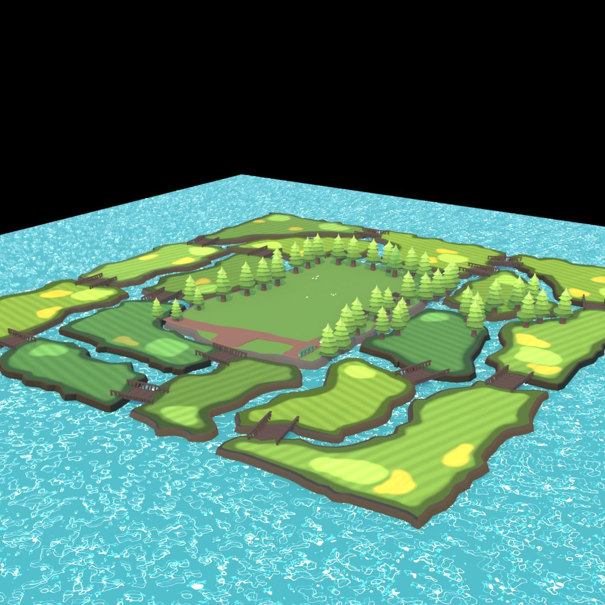
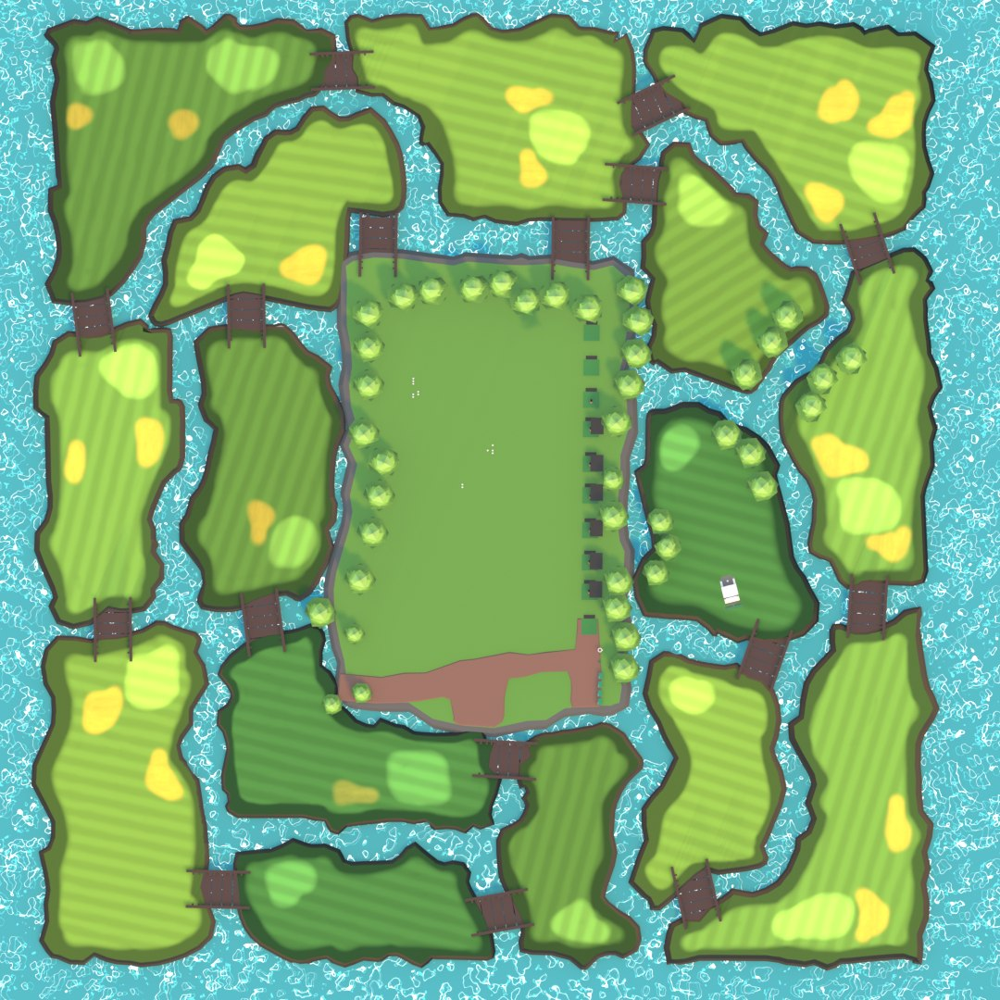
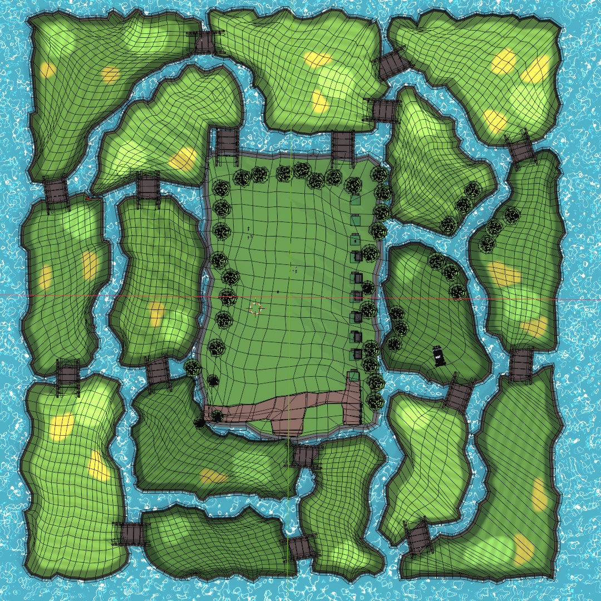
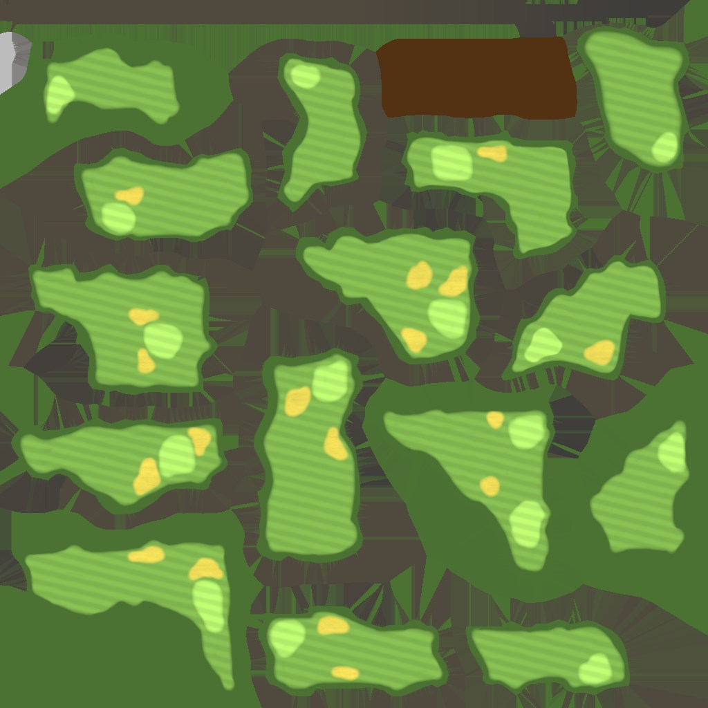
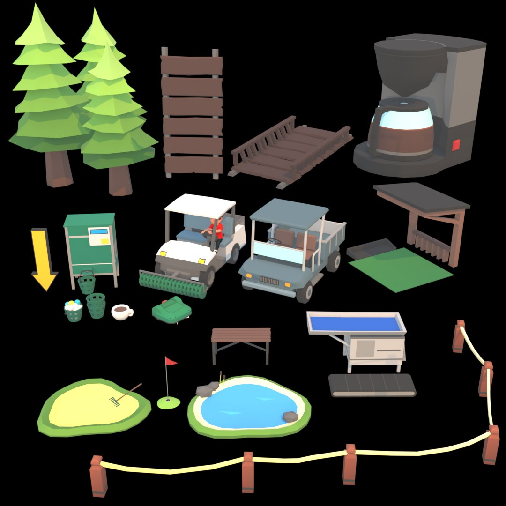
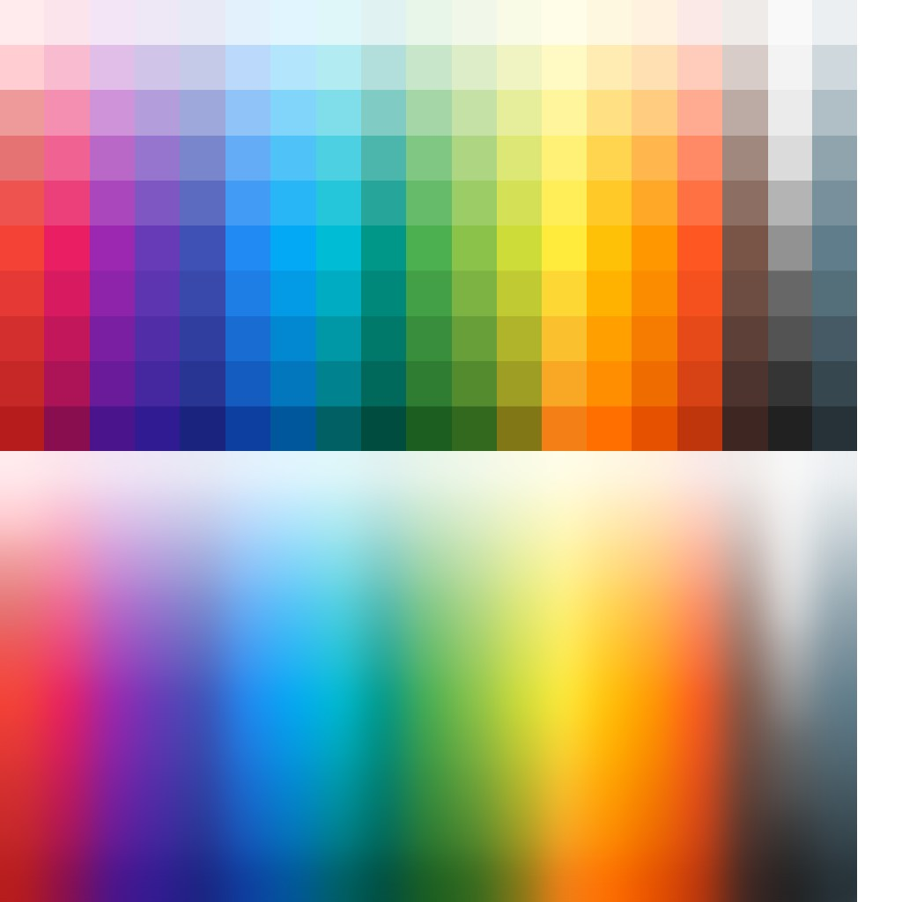
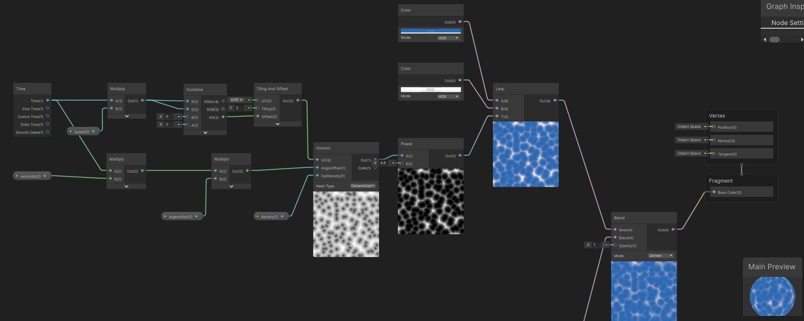
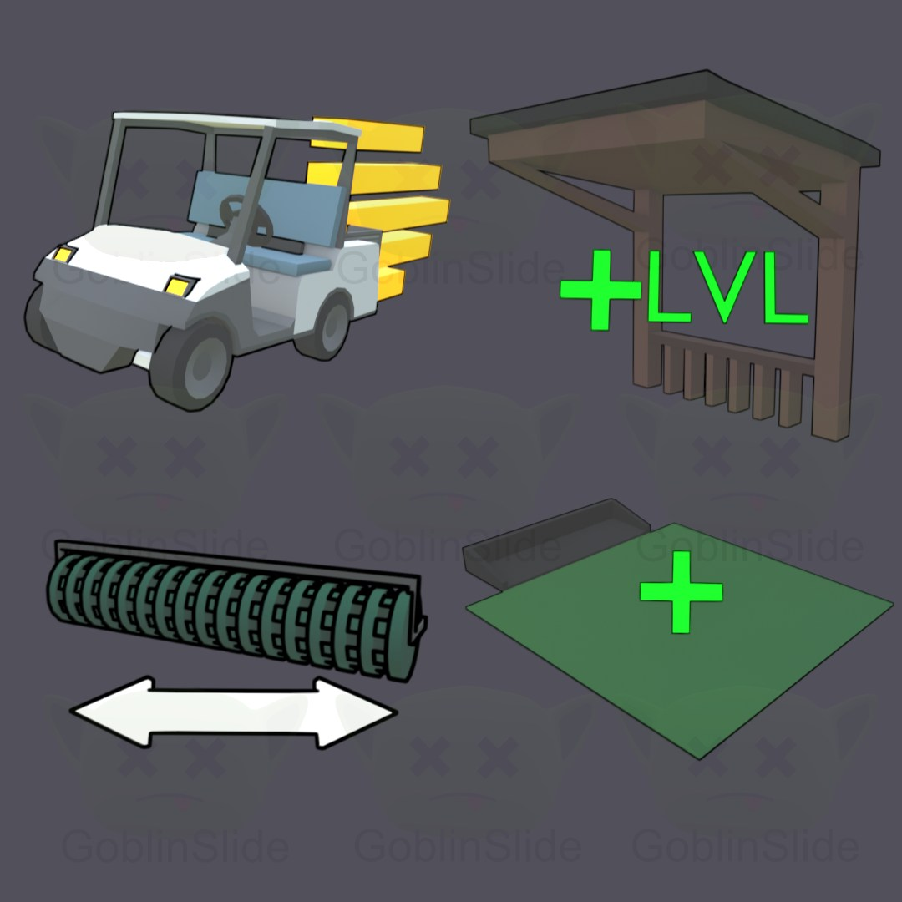
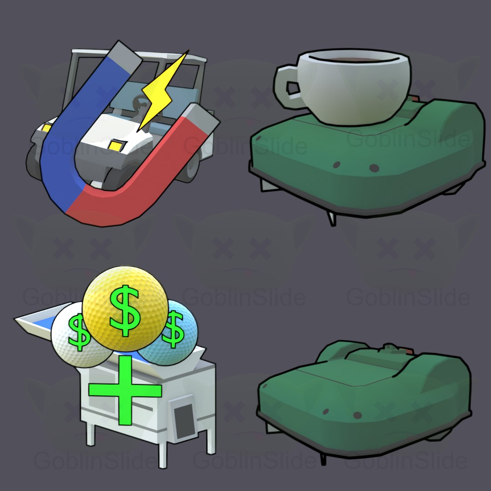
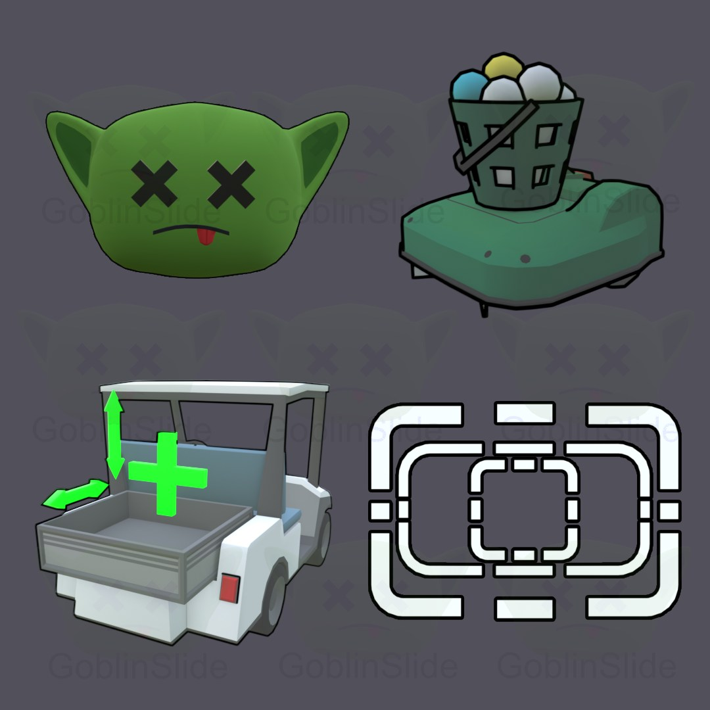

Mobilspel · Eget projekt · 2026
Idle Golf Range Tycoon
Ett idle-tycoonspel för iOS, gjort och släppt på egen hand i Unity: du kör bollplockarbilen, samlar in bollarna och bygger upp en sliten drivingrange till ett företag som sköter sig självt.
Jag har gjort grafiken, VFX:en, UI:t och själva spelet. Här är hur banan, assetsen och effekterna byggdes.
- Roll
- Eget projekt – grafik, VFX, UI och utveckling
- Motor
- Unity 6 · URP
- Verktyg
- Blender, Affinity, Unity
- Plattform
- iOS · Släppt september 2026

{kind=link}
{kind=link}
Leveldesign
Ö-banan runt drivingrangen
Jag började med att rita öarna i 2D uppifrån, gjorde om ritningen till SVG och importerade den till Blender. Där drog jag ner upplösningen på kurvorna, gjorde om dem till mesh, UV-mappade dem och texturerade banan i Substance Painter.
{kind=link}

{kind=link}

{kind=link}

{kind=link}

Assets
Modellerade och texturerade i Blender
Allt utom banan delar ett enda material: en textur med färgrutor som alla assets UV:er pekar in i, vilket håller hela scenen nere på väldigt få material. Själva färgtexturen har jag inte gjort.
{kind=link}

{kind=link}
{kind=link}

Material och VFX
Vattenshader och partiklar i Unity
{kind=link}

Animation
UI
Ikoner för uppgraderingar och studiologgan
{kind=link}

{kind=link}

{kind=link}
